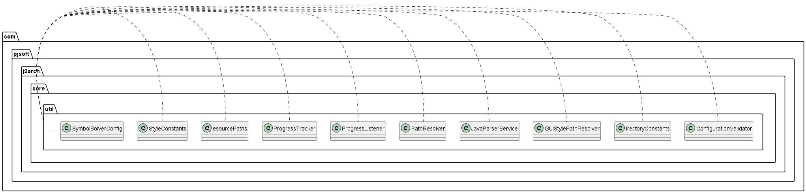

Package Diagram

Classes
- com.pjsoft.j2arch.core.util.ConfigurationValidator
- com.pjsoft.j2arch.core.util.DirectoryConstants
- com.pjsoft.j2arch.core.util.GUIStylePathResolver
- com.pjsoft.j2arch.core.util.JavaParserService
- com.pjsoft.j2arch.core.util.PathResolver
- com.pjsoft.j2arch.core.util.ProgressListener
- com.pjsoft.j2arch.core.util.ProgressTracker
- com.pjsoft.j2arch.core.util.ResourcePaths
- com.pjsoft.j2arch.core.util.StyleConstants
- com.pjsoft.j2arch.core.util.SymbolSolverConfig